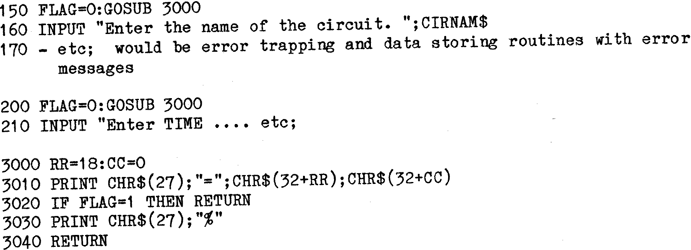

80-Bus News |
September–October 1983 · Volume 2 · Issue 5 |
| Page 23 of 67 |
|---|
| Line 310 | – | Continue until % Files done. |
| Line 320 | – | Back to CP/M. |
The above Program would initialize 3 files of 100 records, each of 582 bytes, on drives A and B, marking each record as free, and filling all fields (except MK$) with ‘Period’ characters. There are 9 repetitions of 6 different fields in each record in this example.
e.g CN$(1),CNA$(1)......O$(1),C$(1) up to CN$(9),CNA$(9)......O$(9),C$(9)
Each File will consist of 100 records x 582 bytes = 58,200 bytes or app 58K. Thus the Three Data files will occupy about one half of each Disk space. It will sometimes be convenient to try to structure a Data File so that it can be kept to less than about 40K (assuming 64K RAM). If this can be done then if a lot of Data processing is going to occur the Data can be RBAD directly into ARRAYS in RAM for processing, and Written out to Disk afterwards. Processing will then be a lot faster, and of course Disk and Drive wear will be minimized. Another alternative is to use Virtual Disk.
Note that in this example the SAME field variables were used for drives A and B. Because of this, the two files could not be OPEN and PUT at the same time, but only one set of ‘LSET’ statements was needed. An alternative method is to have both files OPEN at the same time. If this is done then the file number ‘£1’ cannot be used for both files and one would have to be referred to by another number like ‘£2’. The two sets of FIELD statements would then have had to use differing Variables, and an additional set of ‘LSET’ statements would also have been needed. A further slight complication is that extra DIM statements might be necessary, for any extra FIELD variables that use arrays. (Especially where the program is to be compiled and all Arrays must be DIM’ed.)
When processing Data it is common practice for programmers to use a lot of PRINT CHR$(26) statements to clear the screen, and then to loop back to reprint updated Data, or to PRINT a succession of INPUT prompts at the bottom of the screen. This causes the display to scroll upwards, particularly where input errors have occured and Error messages and repeat prompts are printed. A much more effective method is available. The Gemini IVC card supports a number of commands that enable the cursor to be repositioned, and the screen to be cleared from the cursor. If this approach is used, then a much steadier display is possible. e.g.
| Page 23 of 67 |
|---|